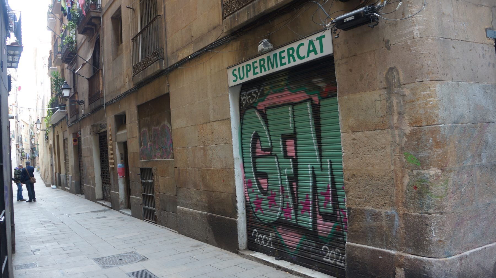
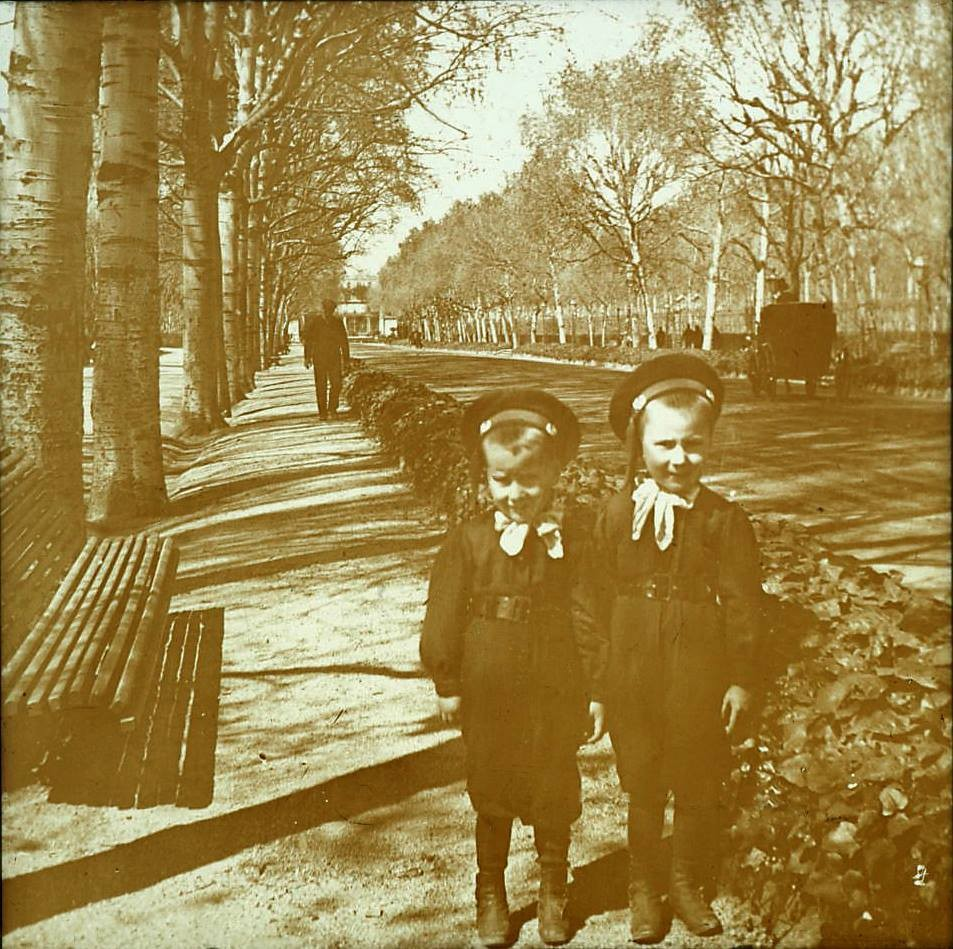

Sant Pere Mitjà, 12 6è (1896-1899)
Audioguia
Prem play per escoltar la història
Àudio pendent de gravació
Una nova casa per a Artur i Emília
El 1896, Artur Godes Caballeria i Emília Hurtado Giró van deixar Banys Vells 15 i es van instal·lar al sisè pis del número 12 del carrer de Sant Pere Mitjà.
Amb ells hi van arribar el seu primer fill, Emili Godes Hurtado, nascut l'any anterior, i Mercè Godes Caballeria, la germana d'Artur.
El trasllat marca un canvi de generació: fins ara hem seguit la casa de Pasqual i Rosa; a partir d'aquí seguim la d'Artur.
I hi ha una altra cosa: Artur torna al barri on va créixer. D'aquest portal a Sant Pere Més Baix 40, on la família havia viscut entre 1885 i 1891, hi ha setanta-set metres. El mercat de Santa Caterina és aquí mateix, a la cantonada.
Els Godes havien creuat a la Ribera el 1891 i tornaven a Sant Pere cinc anys després. El mapa d'aquesta família es continua movent dins del mateix grapat de carrers.
Artur, músic del Liceu
Artur tenia 28 anys quan va arribar a Sant Pere Mitjà. Era músic, compositor i tenor, i treballava com a comprimari de la companyia d'òpera italiana del Gran Teatre del Liceu.
Els comprimaris interpretaven els papers secundaris indispensables per completar el repartiment: missatgers, soldats, criats, artesans, personatges de cort. Surten a cada funció, sostenen l'obra i no apareixen mai al cartell.
Entre 1893 i 1923 —trenta anys de temporades— Artur va assumir personatges com Augustin Moser, el comte de Ceprano, Marcellus, Marco, un missatger o Walther von der Vogelweide.
La seva trajectòria va combinar sempre l'escenari amb la música religiosa: va ser mestre de capella de Santa Maria del Mar i, més endavant, de la Bonanova.
Un sisè pis al barri de Sant Pere i el Liceu a la Rambla: vint minuts a peu separaven la casa de l'escenari.
El naixement d'Ernest
L'11 d'octubre de 1896 va néixer en aquesta casa el segon fill del matrimoni, Ernest Godes Hurtado.
Va ser batejat el 18 d'octubre a la parròquia de Sant Francesc de Paula. Els padrins van ser el seu oncle Pau Godes Caballeria i Ramona Monrós.
Ja adult, Ernest se n'aniria a Tarragona, on va treballar de gerent dels estibadors del port per a la naviliera José Tayá, i més endavant a Còrdova, on va ser propietari d'una serradora.
D'ell arrenca la branca dels Godes Molina: el nen que va néixer en aquest sisè pis va iniciar, amb els seus descendents, una de les línies de la família.
Dos germans nascuts a dues cases separades per mig quilòmetre acabarien un a Còrdova i l'altre fent-se un nom com a fotògraf a Barcelona.

Qui va viure a Sant Pere Mitjà 12?
Durant aquesta etapa hi van conviure cinc persones: Artur Godes Caballeria, músic i tenor del Liceu; Emília Hurtado Giró, la seva esposa; Emili Godes Hurtado, nascut el 1895; Ernest Godes Hurtado, nascut en aquesta casa el 1896; i Mercè Godes Caballeria, germana d'Artur.
Mercè, soltera, va seguir Artur i Emília de casa en casa. Va ser, amb la seva cunyada, el suport constant dels Godes Hurtado durant dècades.
Altes i baixes de l'habitatge
-
1896
Arribada d'Artur, Emília, Emili i Mercè
Van pujar des de Banys Vells 15 al sisè pis d'aquesta casa. Artur tenia 28 anys; Emília, 24; el petit Emili, un any.
-
11 d'octubre de 1896
Naixement d'Ernest Godes Hurtado
El segon fill del matrimoni va néixer aquí. El van batejar una setmana després a Sant Francesc de Paula.
-
1899
Marxa de tota la família
Artur, Emília, Emili, Ernest i Mercè es traslladen a Ripoll 12, 2n 2a.
Context Espanya
La guerra de 1898 contra els Estats Units va acabar amb la pèrdua de Cuba, Puerto Rico i les Filipines.
L'anomenat desastre del 98 va obrir una crisi política i intel·lectual sobre la feblesa de l'Estat, el sistema de la Restauració i el futur del país. La reforma fiscal posterior buscava afrontar el dèficit del conflicte.
Context Catalunya
L'impacte econòmic i polític del 98 va reforçar les demandes de reforma, i una part del catalanisme va guanyar capacitat d'organització.
El 1899, comerciants i industrials van protagonitzar el Tancament de Caixes, una protesta contra els nous impostos estatals que va convertir la resistència fiscal en un conflicte polític.
Context Barcelona
La família va arribar a Sant Pere Mitjà el mateix any de l'atemptat contra la processó de Corpus al carrer dels Canvis Nous, el 7 de juny de 1896, a mig quilòmetre d'aquí. L'explosió i la repressió posterior van desembocar en els processos de Montjuïc.
El 1897, Barcelona va incorporar administrativament Gràcia, Sants, Sant Martí de Provençals, Sant Andreu de Palomar, Sant Gervasi de Cassoles i les Corts. La ciutat es multiplicava sobre el mapa mentre al nucli antic continuaven la densitat, els tallers i els pisos alts.
Una generació que comença a separar-se
Sant Pere Mitjà marca un canvi en el relat. Pasqual i Rosa ja havien mort i els seus fills començaven a seguir camins diferents.
Artur construïa una carrera musical i una família pròpia; Pau havia deixat Banys Vells per iniciar la seva; i Dolors continuava vinculada a aquella casa fins al 1915.
La història deixa de seguir una única llar i es ramifica per Barcelona.
Mira al teu voltant
Busqueu les finestres dels pisos superiors. Artur i Emília vivien en un sisè pis amb dos infants petits, sense ascensor: penseu en l'aigua, el carbó, el menjar i la roba pujant aquelles escales cada dia.
Consulta de l'Arxiver
El 1897, mentre la família vivia aquí, Barcelona va fer una cosa que la va canviar de mida. Quina?